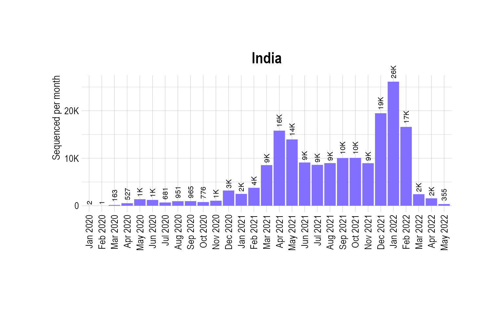
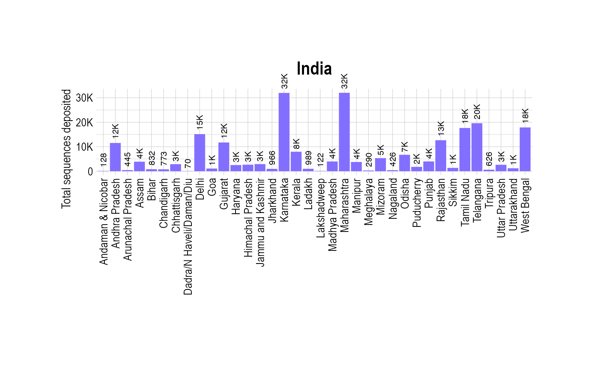

Multinomial modeling - India
Source:vignettes/MultinomialModeling_India.Rmd
MultinomialModeling_India.Rmd
suppressPackageStartupMessages({
library(covmuller)
library(tidyverse)
})
theme_set(CovmullerTheme())
gisaid_metadata <- qs::qread(file = "~/github/2021_Covid19_surveillance/data/all_metadata/metadata_tsv_2023_01_14.qs")
gisaid_india <- FilterGISAIDIndia(gisaid_metadata_all = gisaid_metadata)Plot total sequenced cases
country_seq_stats <- TotalSequencesPerMonthCountrywise(gisaid_india, rename_country_as_state = TRUE)
p0 <- BarPlot(country_seq_stats, ylabel = "Sequenced per month", color = "slateblue1", label_si = TRUE, xangle = 90, title = "India")
p0
Plot stateswise sequenced cases
state_seq_stats <- TotalSequencesPerMonthStatewise(gisaid_india)
state_seq_stats_summary <- state_seq_stats %>%
group_by(State) %>%
summarise(value = sum(value))
state_seq_stats_summary$State[state_seq_stats_summary$State == "Dadra and Nagar Haveli and Daman and Diu"] <- "Dadra/N Haveli/Daman/Diu"
p1 <- BarPlot(state_seq_stats_summary, xaxis = "State", ylabel = "Total sequences deposited", color = "slateblue1", label_si = TRUE, xangle = 90, title = "India")
p1
Get VOCs
vocs <- GetVOCs()
omicron <- vocs[["omicron"]]
vocs[["omicron"]] <- NULL
custom_voc_mapping <- list(
`BA.1.1` = "BA.1",
`BA.1` = "BA.1",
`BA.2` = "BA.2",
`BA.2.10` = "BA.2.X",
`BA.2.10.1` = "BA.2.X",
`BA.2.12` = "BA.2.X",
`BA.2.12.1` = "BA.2.X",
`BA.3` = "BA.3",
`BA.4` = "BA.4",
`BA.5` = "BA.5",
`BA.2.74` = "BA.2.X",
`BA.2.75` = "BA.2.75",
`BA.2.76` = "BA.2.X",
`XBB.*` = "XBB",
`BQ.1` = "BQ.1+",
`BQ.1.*` = "BQ.1+"
)
gisaid_india_collapsed <- CollapseLineageToVOCs(
variant_df = gisaid_india,
vocs = vocs,
custom_voc_mapping = custom_voc_mapping,
summarize = FALSE
)
gisaid_india_collapsed_sel <- gisaid_india_collapsed %>%
filter(MonthYearCollected >= "Oct 2022") %>%
filter(lineage_collapsed != "Unassigned")
vocs_to_keep <- table(gisaid_india_collapsed_sel$lineage_collapsed)
vocs_to_keep <- vocs_to_keep[vocs_to_keep > 100]
gisaid_india_collapsed_sel <- gisaid_india_collapsed_sel %>% filter(lineage_collapsed %in% names(vocs_to_keep))
gisaid_india_shared_dateweek <- SummarizeVariantsDatewise(gisaid_india_collapsed_sel, by_state = TRUE)
head(gisaid_india_shared_dateweek)## # A tibble: 6 × 4
## State DateCollectedNumeric lineage_collapsed n
## <chr> <dbl> <chr> <int>
## 1 Arunachal Pradesh 19361 XBB 1
## 2 Assam 19274 BA.2.X 1
## 3 Assam 19276 XBB 1
## 4 Assam 19277 XBB 2
## 5 Assam 19307 BA.2.X 1
## 6 Assam 19313 XBB 2
fit_india_multi_predsbystate <- FitMultinomStatewiseDaily(gisaid_india_shared_dateweek)## # weights: 120 (92 variable)
## initial value 4308.465292
## iter 10 value 3073.991964
## iter 20 value 2945.889618
## iter 30 value 2930.542975
## iter 40 value 2927.362720
## iter 50 value 2926.399219
## iter 60 value 2926.190196
## final value 2926.183768
## converged
head(fit_india_multi_predsbystate)## lineage_collapsed DateCollectedNumeric State prob
## 1 BA.2.75 19266 Arunachal Pradesh 2.633300e-06
## 2 BA.2.X 19266 Arunachal Pradesh 7.674299e-10
## 3 BQ.1+ 19266 Arunachal Pradesh 2.121194e-13
## 4 Others 19266 Arunachal Pradesh 5.229393e-07
## 5 XBB 19266 Arunachal Pradesh 9.999968e-01
## 6 BA.2.75 19273 Arunachal Pradesh 1.391021e-06
## SE df asymp.LCL asymp.UCL DateCollected
## 1 1.852356e-05 NA -3.367221e-05 3.893881e-05 2022-10-01
## 2 5.252235e-09 NA -9.526761e-09 1.106162e-08 2022-10-01
## 3 1.445271e-12 NA -2.620561e-12 3.044799e-12 2022-10-01
## 4 7.252548e-06 NA -1.369179e-05 1.473767e-05 2022-10-01
## 5 2.577970e-05 NA 9.999463e-01 1.000047e+00 2022-10-01
## 6 9.784527e-06 NA -1.778630e-05 2.056834e-05 2022-10-08